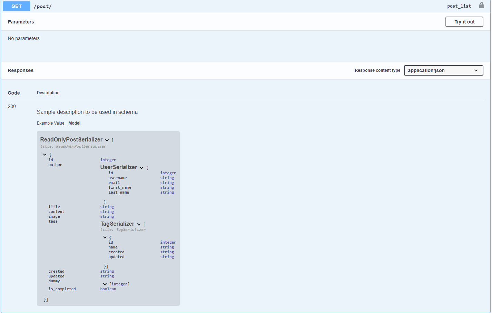
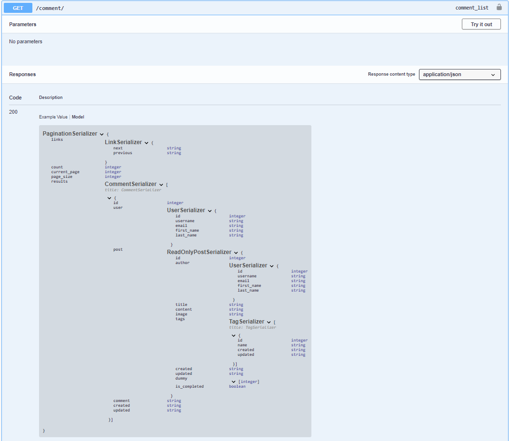

Swagger Generation Example
Example is available in test_django_app, you can run the app after cloning the project.
python test_django_app/manage.py runserver
Swagger Generation
Note that the swagger generation is for drf_serpy.Serializer and doesn't care about the inputted model.
i.e. the openapi.Schema will be generated based on the serializer attributes.
import drf_serpy as serpy
from drf_yasg.utils import swagger_auto_schema
from rest_framework import status
from rest_framework.response import Response
from rest_framework.viewsets import ModelViewSet
from .models import Post
from .serializers import drf, serps
# serps.ReadOnlyPostSerializer is this:
# class ReadOnlyPostSerializer(serpy.Serializer):
# """
# Sample description to be used in schema
# """
# id = serpy.IntField()
# author = UserSerializer()
# title = serpy.StrField()
# content = serpy.StrField()
# image = serpy.ImageField()
# tags = TagSerializer(many=True)
# created = serpy.DateTimeField()
# updated = serpy.DateTimeField()
# dummy = serpy.MethodField()
# is_completed = serpy.MethodField()
# def get_dummy(self, value) -> List[int]:
# return list(range(1, 10))
# # typing is necessary to create schema, otherwise this will throw an assertion error
# def get_is_completed(self, value) -> bool:
# return True
class PostViewSet(ModelViewSet):
queryset = Post.objects.all()
serializer_class = drf.PostSerializer
@swagger_auto_schema(
responses={
200: ReadOnlyPostSerializer.to_schema(many=True),
},
)
def list(self, request, *args, **kwargs):
# get your objects
serializer = serps.ReadOnlyPostSerializer(instance=self.queryset.all(), many=True)
return Response(data=serializer.data, status=status.HTTP_200_OK)
Generated Swagger: 
Generic serializer swagger generation
# class CommentSerializer(drf_serpy.Serializer):
# id = drf_serpy.IntField()
# user = UserSerializer()
# post = ReadOnlyPostSerializer()
# comment = drf_serpy.StrField()
# created = drf_serpy.DateTimeField()
# updated = drf_serpy.DateTimeField()
# class LinkSerializer(drf_serpy.Serializer):
# next = drf_serpy.StrField()
# previous = drf_serpy.StrField()
# class PaginationSerializer(drf_serpy.Serializer):
# links = LinkSerializer()
# count = drf_serpy.IntField()
# current_page = drf_serpy.IntField()
# page_size = drf_serpy.IntField()
# results = drf_serpy.Serializer()
class CommentViewSet(ModelViewSet):
queryset = Comment.objects.all()
serializer_class = drf.CommentSerializer
@swagger_auto_schema(
responses={
200: PaginationSerializer.to_schema(serializer=CommentSerializer(many=True)),
},
)
def list(self, request, *args, **kwargs):
self.serializer_class = serps.CommentSerializer
return super().list(request, *args, **kwargs)
Generated Swagger:
